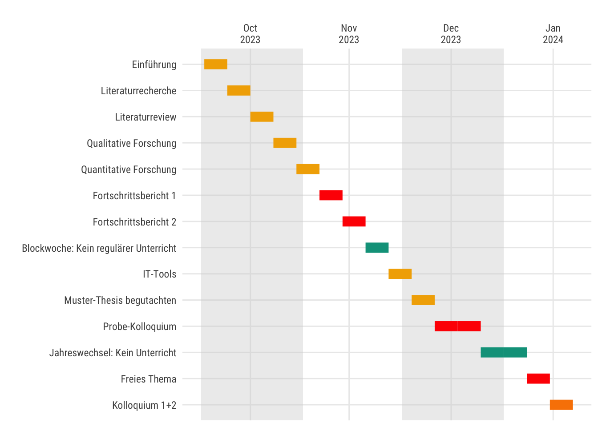

| Nr | Wochendatum | Thema | Details |
|---|---|---|---|
| 1 | 2023-10-02 | Einführung | Prüfungsmodalitäten |
| 2 | 2023-10-09 | Literaturrecherche | Literaturdatenbanken, Zotero, Scopus, Web of Science |
| 3 | 2023-10-16 | Literaturreview | Vorgehen, Publish or Perish |
| 4 | 2023-10-23 | Qualitative Forschung | Mayring, Grounded Theory, Software |
| 5 | 2023-10-30 | Quantitative Forschung | Kausalität, Frequentismus vs. Bayes, Mediation |
| 6 | 2023-11-06 | Fortschrittsbericht 1 | Plus, Minus, Interessant |
| 7 | 2023-11-13 | Fortschrittsbericht 2 | NA |
| 8 | 2023-11-20 | Blockwoche: Kein regulärer Unterricht | NA |
| 9 | 2023-11-27 | IT-Tools | Zotero, Google Docs, Perplexity, PDF GPT, Ganttrify, Notion, ... |
| 10 | 2023-12-04 | Muster-Thesis begutachten | Lesen und Bewerten einer (guten) Bachelor-Thesis |
| 11 | 2023-12-11 | Probe-Kolloquium | Achtung: Terminverschiebung auf 14.12. |
| 12 | 2023-12-18 | Probe-Kolloquium | Bitte beachten Sie die Hinweise |
| 13 | 2023-12-25 | Jahreswechsel: Kein Unterricht | NA |
| 14 | 2024-01-01 | Jahreswechsel: Kein Unterricht | NA |
| 15 | 2024-01-08 | Freies Thema | z.B. Finale Fragen, Schreibworkshop |
| 16 | 2024-01-15 | Kolloquium 1+2 | Show your work :-) |
Bachelorseminar
1 Überblick

Bildquelle: Bing Image Creator, Microsoft
1.1 Lernziele
Nach diesem Kurse sollten Sie …
- typische Probleme und deren Lösungen beim Verfassen einer Abschlussarbeit kennen
- Methoden des wissenschaftlichen Arbeitens praktisch anwenden können
- wissen, wie man eine wissenschaftliche Arbeit im Rahmen eines Kolloquiums verteidigt
1.2 Überblick zum Modul
Das Modul Bachelorseminar strukturiert die Betreuung Ihrer Abschlussarbeit:
- Wir besprechen Ihre Fragen.
- Der Dozent gibt Feedback zu Ihrem Fortschritt
- Sie stellen den Fortschritt Ihrer Arbeit vor.
- Sie geben Feedback auf die Arbeit Ihrer Kommiliton:innen - und erhalten im Gegenzug - Feedback.
- Wir wiederholen nach Bedarf etwaige Inhalte aus dem Bereich wissenschaftliches oder - empirisches Arbeit oder vertiefen diese.
1.3 Modulverlauf
üëâ Hier finden Sie einen Überblick zum Modulverlauf.
Tabelle 6.1 stellt den Modulverlauf tabellarisch dar.
Abbildung 1.1 stellt den Zeitplan als Verlaufsdiagramm (Ganttdiagramm) dar.

Abbildung 1.2 zeigt den groben Ablauf der Erstellung Ihrer Abschlussarbeit.

1.4 Prüfungstag
Die Termine für die Prüfung werden in Moodle bekannt gegeben.